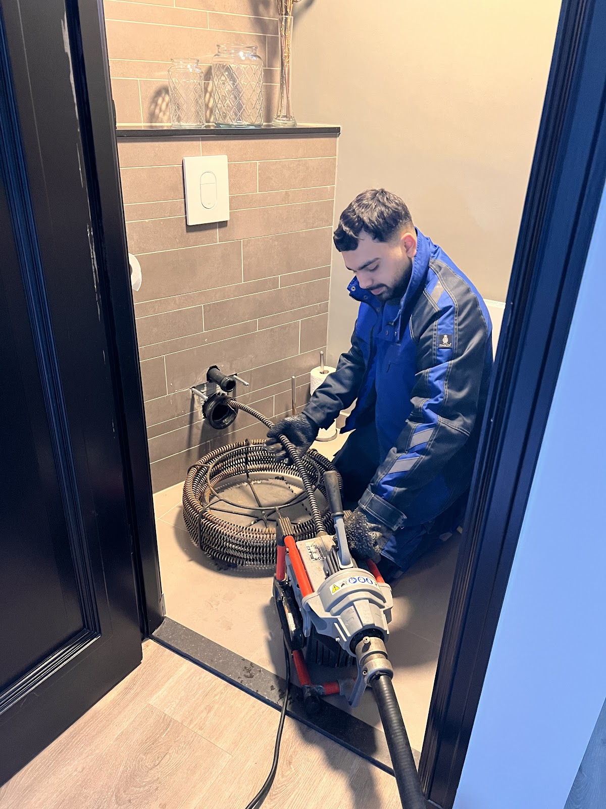
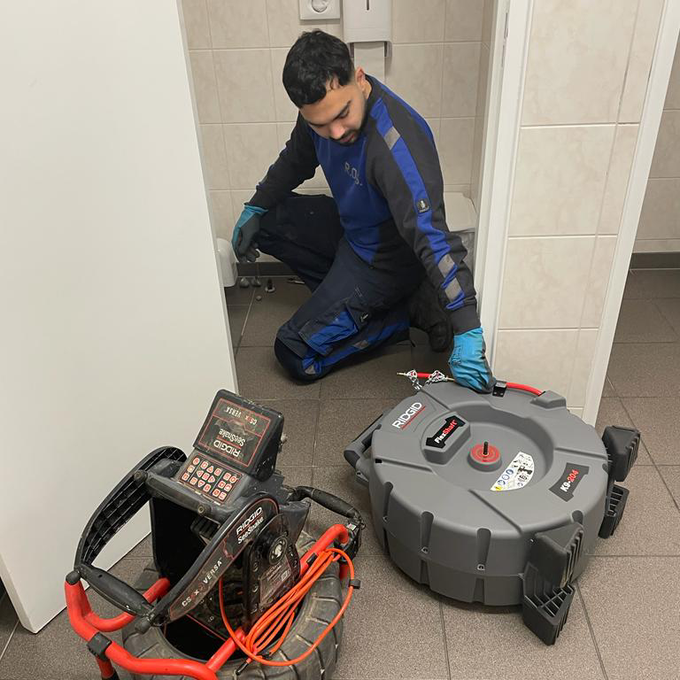
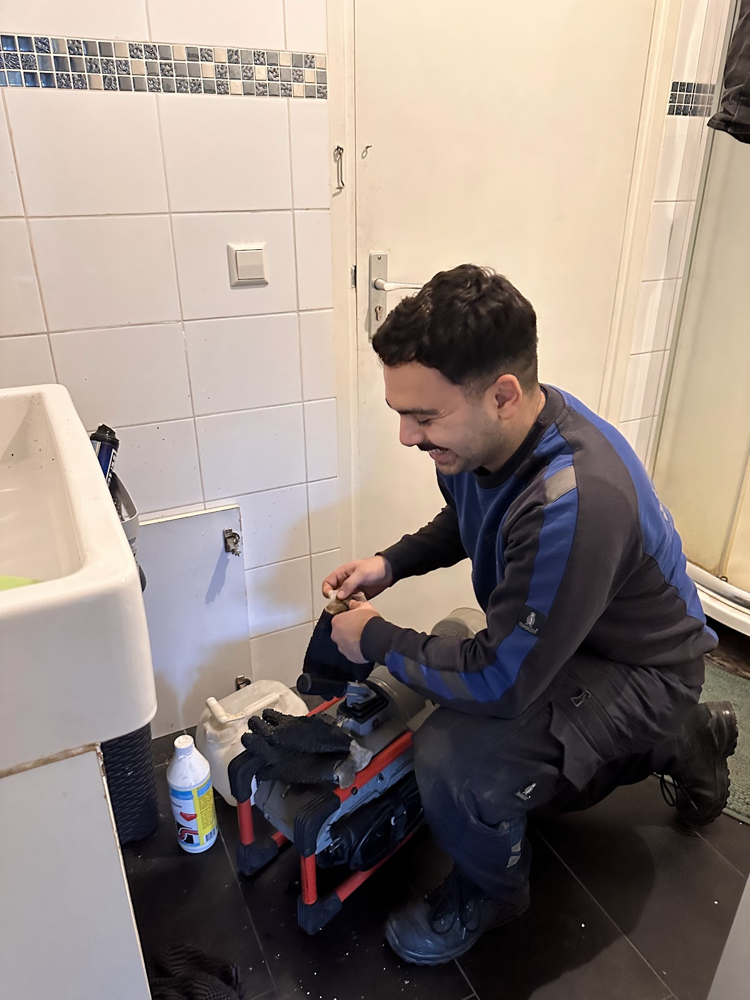
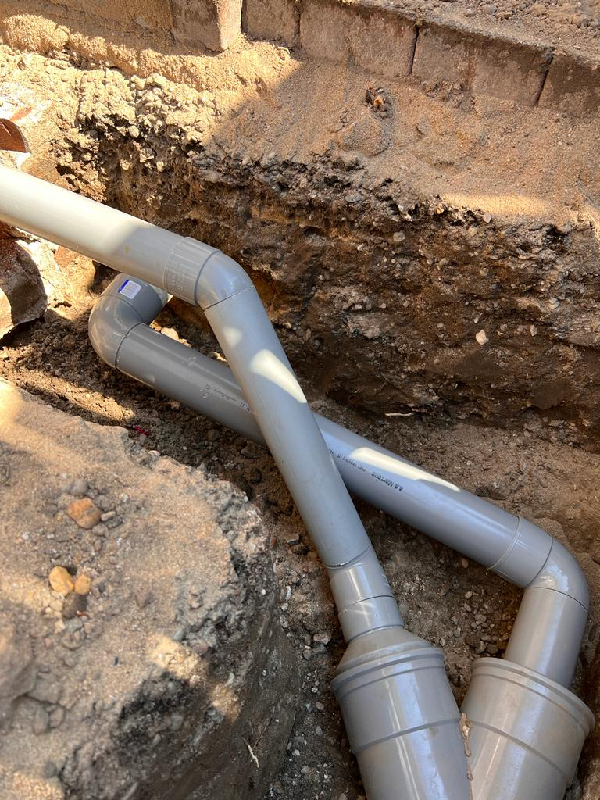
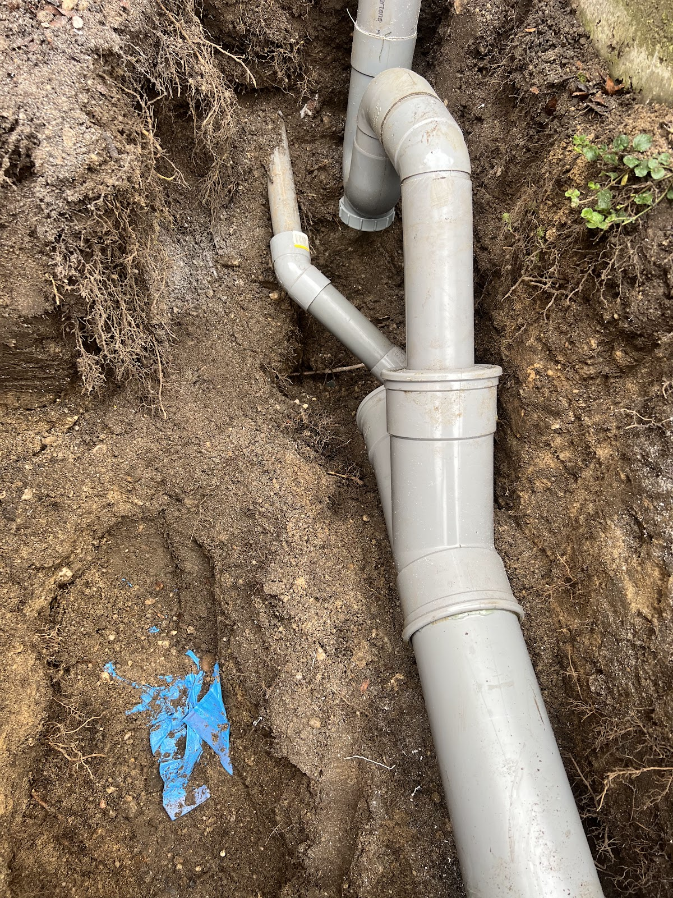

Verstopt? Wij maken het weer vrij.
Wc, gootsteen, doucheput of riool in Arnhem en omgeving. Bel ons, ook midden in de nacht of op zondag. Je hoort vooraf wat het ongeveer kost.
Dag en nacht bereikbaar 06 21 88 22 32- Elke dag open
- 24 uur, ook in het weekend
- Prijs vooraf
- Duidelijke indicatie
- Pinnen
- Gewoon op locatie
- Google 5,0
- Uit 109 reviews

Waar loopt het vast?
Borrelt het, zakt het water traag weg of komt er rioollucht omhoog? Dan zit er ergens een prop van vet, zeepresten, haren, wc-papier of wortels. Kokend water of een middeltje uit de supermarkt maakt het vaak alleen maar koppiger.
Bel 06 21 88 22 32-
Wc
Het water stijgt bij doortrekken of zakt maar langzaam weg.
-
Gootsteen en keukenafvoer
Vet en etensresten zetten zich vast. Het water blijft staan of ruikt.
-
Doucheput en wastafel
Haren en zeep vormen een prop. De douchebak loopt vol tot je enkels.
-
Riool en hoofdafvoer
Meerdere afvoeren tegelijk traag, borrelende putjes of water dat terugkomt. Ook bij bedrijfspanden.
-
Regenpijp
Bladeren en vuil houden het regenwater tegen.

Zo gaat het als je belt
Geen giswerk en geen verrassingen achteraf. We leggen uit wat we doen en waarom.
-
1
Je belt, dag of nacht
Vertel wat je ziet en hoort: borrelen, stank, water dat terugkomt.
-
2
Je hoort de prijs vooraf
Je krijgt een duidelijke prijsindicatie voordat we beginnen.
-
3
We maken het vrij
Met de ontstoppingsveer of hogedrukreiniging, en waar nodig camera-inspectie. Zonder onnodig hak- en breekwerk.
-
4
Pinnen en advies
Je rekent ter plekke af met pin. Je hoort waardoor het kwam en hoe je herhaling voorkomt.
Wat klanten zeggen
5,0 op Google, uit 109 reviews
"Ernstige verstopping van de keuken afvoer. Cebrail heeft dit op zeer nette wijzen opgelost. Ook al koste het best wel wat moeite. Hij was de rust zelve. Maakt er geen haast klus van. Na een dik uur was het probleem verholpen. Ook fijn dat ze met een vaste prijs werken, tenzij er camera-inspectie plaats moet vinden."
"Hield zich keurig aan de afspraken. Zowel qua tijd als qua prijs."
"Vriendelijk en netjes werk afgeleverd. Eigenlijk nog iets meer gedaan dan afgesproken was. Wij waren erg blij met dit bedrijf!"
"Zeer tevreden over de service! De verstopping van de gootsteen werd snel en vakkundig opgelost. Alles was netjes, ze waren mooi op tijd en hebben keurig gewerkt. Zeker een aanrader!"
"Ik had een ernstige opstopping in de keuken, en dit snel en vakkundig opgelost! Heel fijn dat er nog hardwerkende en betrouwbare bedrijven zijn. Was snel verholpen en zeker niet duur! De transparante kosten en de vriendelijk van het bedrijf waren super!"
"Topbedrijf! Vriendelijk en professioneel. Wij hadden een verstopping in het riool waardoor het afvoerwater langzaam wegliep en er uiteindelijk ook een lekkage in onze kelder ontstond. Na het eerste contact stonden ze snel al bij ons op de stoep. De verstopping was snel verholpen en we kregen goed advies."
Tot in de grond
Zit het probleem dieper in de leiding, dan gaan we de grond in. Dit is rioolwerk bij klanten in en rond Arnhem.



Vaak gevraagd
- Kunnen jullie ook 's avonds, 's nachts of in het weekend komen?
- Ja. We zijn elke dag 24 uur bereikbaar, ook op zaterdag en zondag.
- Wat kost het ontstoppen?
- Dat hangt af van de verstopping. Je krijgt vooraf een duidelijke prijsindicatie, zodat je weet waar je aan toe bent.
- Kan ik met pin of kaart betalen?
- Ja, je rekent na de werkzaamheden ter plekke af met pin of kaart.
- Hoe weet ik of mijn riool verstopt is?
- Lopen meerdere afvoeren tegelijk traag weg, borrelen de putjes of ruik je rioollucht in huis? Dan zit de verstopping waarschijnlijk in de hoofdafvoer.
- Welke apparatuur gebruiken jullie?
- Ontstoppingsveren, hogedrukreiniging en waar nodig camera-inspectie om te zien wat er diep in de leiding gebeurt.
- Hoe voorkom ik een nieuwe verstopping?
- Giet geen vet door de gootsteen en spoel afvoerputjes regelmatig door. Na het werk krijg je advies voor jouw situatie.
- Adres
- Bruningweg 23
6827 BM Arnhem - Openingstijden
- Maandag tot en met zondag, 24 uur